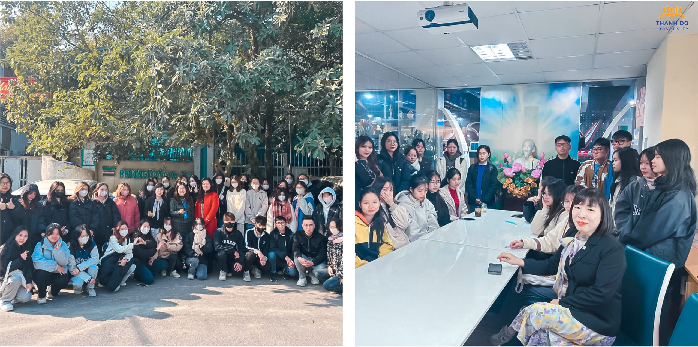

Kế toán
Tổng quan
Kế toán là công việc ghi chép, thu nhận, xử lý và cung cấp các thông tin về tình hình hoạt động tài chính của một tổ chức, một doanh nghiệp, một cơ quan nhà nước, một cơ sở kinh doanh tư nhân… Từ quản lý ở phạm vi từng đơn vị, cơ quan, doanh nghiệp cho đến quản lý ở phạm vi toàn bộ nền kinh tế. Chúng ta có thể xác định được đối tượng của Kế toán chính là sự hình thành, biến động của tài sản mà kế toán cần phản ánh, được thể hiện ở hai mặt là tài sản và nguồn vốn trong quá trình hoạt động của đơn vị.
- Mã ngành: 7340301
- Định hướng đào tạo: Kế toán doanh nghiệp, Kế toán tài chính
- Thời gian đào tạo: Tùy thuộc vào đối tượng đầu vào (Trung cấp, Cao đẳng, Đại học)
- Trình độ đào tạo: Cử nhân
- Học phí: 370.000 đồng/1 tín chỉ
Chương trình đào tạo
Tổng số tín chỉ của chương trình đào tạo (Chưa tính các học phần Giáo dục thể chất, Giáo dục Quốc phòng – An ninh, tiếng Anh chuẩn đầu ra): 137 tín chỉ
- Kiến thức giáo dục đại cương: 39 tín chỉ
- Kiến thức giáo dục chuyên nghiệp: 71 tín chỉ
- Học kỳ doanh nghiệp: 20 tín chỉ
- Khóa luận tốt nghiệp/Các học phần thay thế KLTN: 7 tín chỉ
Thông tin chi tiết xem tại: Xem chi tiết tại đây
Triển vọng nghề nghiệp
Dự báo của trang tuyển dụng trực tuyến lớn nhất Việt Nam – VietnamWorks cho thấy trong Top 10 ngành nghề có nhu cầu tuyển dụng cao nhất năm 2019 có sự góp mặt của ngành Kế toán. Ngành kế toán đang là một ngành rất có sức hút hiện nay với lượt đăng ký tuyển sinh tăng lên mỗi năm. Với cơ hội làm việc tốt, công việc văn phòng ổn định và môi trường làm việc chuyên nghiệp và thu nhập tốt, sinh viên kế toán sẽ có tương lai xán lạn.
Hàng ngàn doanh nghiệp mới được thành lập với mức tuyển dụng trung bình từ 3-5 nhân viên kế toán ở nhiều loại hình doanh nghiệp như: Một thành viên, cổ phần, liên doanh, trách nhiệm hữu hạn,… trong những năm gần đây đã chứng minh cho sự hấp dẫn trở lại của ngành Kế toán. Bên cạnh đó, cuộc Cách mạng Công nghiệp 4.0 cùng sự phát triển mạnh mẽ của Internet với các thiết bị di động đã giúp cho hoạt động kế toán không bị giới hạn bởi khoảng cách địa lý, tạo ra nhiều cơ hội việc làm toàn cầu xoay quanh các hệ thống thông tin tài chính và kế toán.
Cơ hội nghề nghiệp:
- Kế toán viên (Accountant)
- Kế toán quản trị (Management Accountant)
- Kế toán thuế (Tax Accountant)
- Kế toán nội bộ (Internal Auditor)
- Kế toán viên công nợ (Accounts Receivable/Payable Clerk)
- Chuyên viên phân tích tài chính (Financial Analyst)
- Chuyên viên quản lý rủi ro (Risk Manager)
- Chuyên viên đầu tư (Investment Analyst)
- Giám đốc tài chính (Chief Financial Officer – CFO)
- Chuyên viên tư vấn tài chính (Financial Consultant)
- Kế toán trưởng
